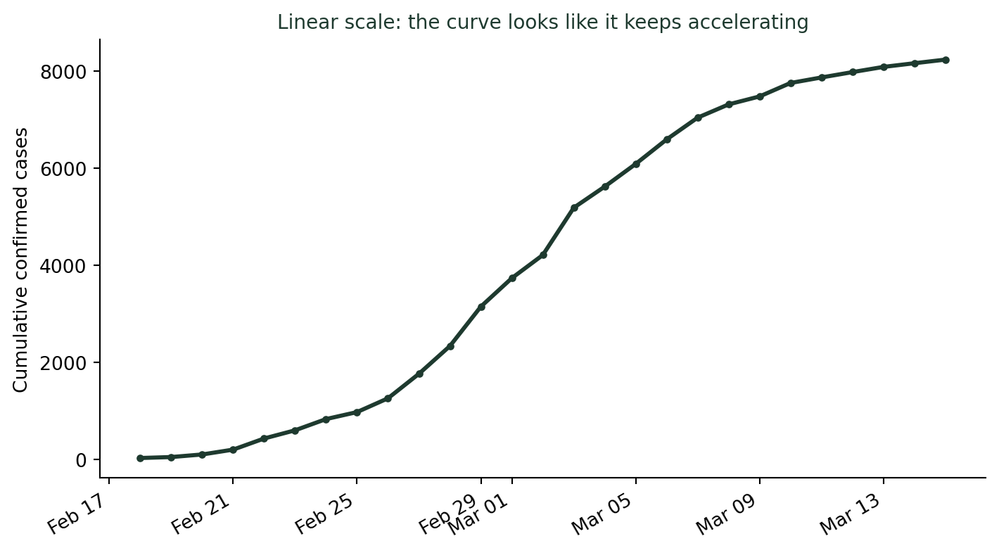
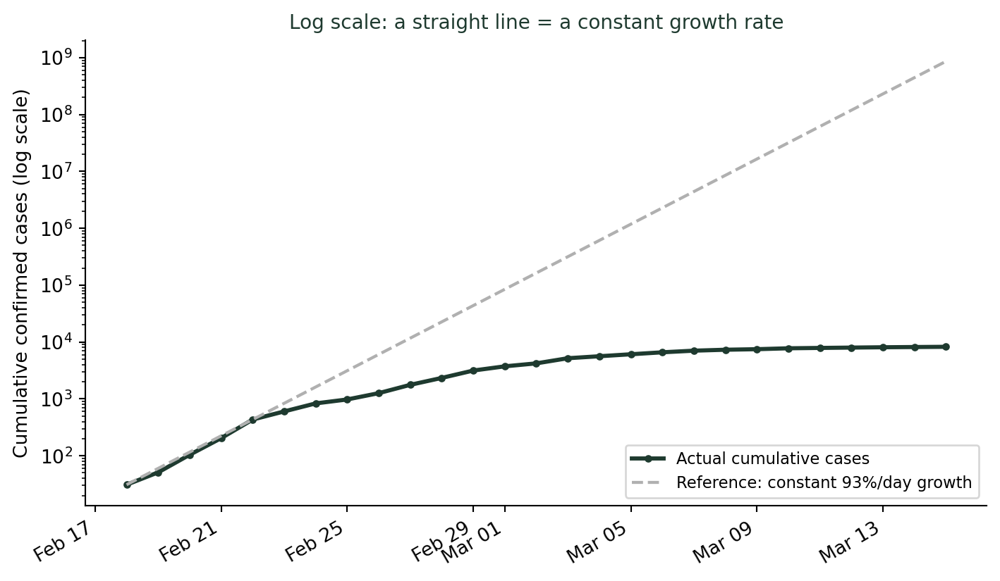

(그래프는 어떻게 우리를 속이는가) 선형 눈금과 로그 눈금은 무엇이 다른가?
통계기초
데이터시각화
2020년 2월 대구 신천지발 확산기, 국내 누적 확진자는 31명에서 보름 만에 8천 명을 넘었다. 이 데이터를 선형 눈금으로 그리면 확산이 갈수록 무섭게 가속되는 것처럼 보인다. 그런데 로그 눈금으로 바꿔 그리면, 실제로는 3월 초부터 증가세가 눈에 띄게 꺾이고 있었다는 사실이 보인다.
그래프는 점점 더 가팔라지는데, 실제로는 진정되고 있었다
2020년 2월 18일, 대구에서 국내 31번째 확진자가 나왔다. 이른바 “31번 확진자”다. 그날 이후 신천지 대구교회를 중심으로 확진자가 쏟아졌다. 국내 누적 확진자 수는 2월 18일 31명에서, 2월 20일 104명, 2월 22일 433명, 2월 29일 3,150명, 그리고 3월 15일에는 8,236명까지 늘었다. 보름 만에 확진자가 265배로 불어난 것이다.
당시 이 추이를 다룬 뉴스 그래프들은 대부분 세로축을 0부터 시작하는 선형 눈금(linear scale)으로 그렸다. 이런 그래프에서 확진자 곡선은 2월 하순까지 거의 바닥에 붙어 있다가, 3월에 접어들며 갑자기 하늘로 치솟는 모양이 된다. “확산세가 걷잡을 수 없이 가팔라지고 있다”는 인상을 준다.
이 곡선만 보면 “3월 들어 확산이 더 무서워졌다”고 읽기 쉽다. 그런데 실제로 방역 당국이 가장 궁금했던 질문은 곡선의 높이가 아니라 증가 속도, 즉 하루 사이에 몇 퍼센트씩 늘고 있는가였다. 그리고 그 답은 선형 눈금 그래프로는 거의 알아볼 수 없다.
선형 눈금과 로그 눈금은 “같은 간격”이 서로 다른 것을 뜻한다
두 눈금의 차이는 간단하다.
- 선형 눈금: 축 위의 같은 간격이 같은 차이(덧셈)를 뜻한다. 0, 1000, 2000, 3000처럼 일정하게 더한 값이 일정한 간격으로 찍힌다.
- 로그 눈금: 축 위의 같은 간격이 같은 비율(곱셈)을 뜻한다. 10, 100, 1000, 10000처럼 일정하게 곱한(10배) 값이 일정한 간격으로 찍힌다.
확진자 수처럼 매일 일정한 비율로 늘어나는 값(지수적 증가, exponential growth)은, 이 성질 때문에 로그 눈금에서 직선으로 나타난다. 반대로 매일 일정한 양만큼 늘어나는 값은 선형 눈금에서 직선이 된다. 즉 어느 눈금을 쓰느냐에 따라 “직선”이 뜻하는 바가 완전히 달라진다.
같은 확진자 데이터를 로그 눈금으로 다시 그려보면 이렇다.

로그 눈금 그래프에서는 두 구간이 뚜렷이 나뉜다. 2월 18일부터 22일까지는 실제 데이터(초록 실선)가 점선 기준선을 거의 그대로 따라간다 — 이 며칠 동안 확진자가 하루 평균 85% 가까이 늘었다는 뜻이다. 그런데 3월에 접어들면서 초록 실선이 점선 아래로 눈에 띄게 처지기 시작한다. 실제 하루 증가율을 계산해보면 3월 1일 18.6%, 3월 5일 8.3%, 3월 10일 3.7%, 3월 15일에는 0.9%까지 떨어졌다. 곡선의 높이는 계속 올랐지만, 증가율은 3월 초부터 꾸준히 떨어지고 있었다.
선형 눈금이 감추는 것
선형 눈금에서는 나중 구간의 “절대적인 증가폭”이 초반보다 항상 커 보인다. 2월 18일에서 19일 사이의 증가는 20명이지만, 3월 2일에서 3일 사이의 증가는 974명이다. 숫자만 보면 후반부가 훨씬 급박해 보인다. 그러나 비율로 보면 정반대다. 2월 18~19일의 증가율은 64.5%였고, 3월 2~3일의 증가율은 23.1%로 이미 절반 넘게 떨어진 뒤였다. 선형 눈금은 절대량이 커지는 구간을 항상 “가장 위험한 순간”처럼 보이게 만들어, 증가율이 실제로 꺾이고 있다는 신호를 가려버린다.
로그 눈금이 실전에서 쓰이는 이유
이 때문에 실제 역학자들과 국제 통계 기관은 감염병 확산 추이를 다룰 때 로그 눈금 그래프를 즐겨 쓴다. 로그 눈금 위에서는 “직선을 유지하는가, 아래로 꺾이는가”만 보면 되기 때문이다. 직선이 유지되면 여전히 같은 속도로 위험하다는 뜻이고, 아래로 꺾이면 방역 조치가 효과를 내고 있다는 뜻이다. 반대로 위로 꺾이면 오히려 확산 속도가 더 빨라지고 있다는 신호다. 2020년 초 한국의 사례에서 로그 눈금 그래프는 3월 첫째 주부터 이미 곡선이 꺾이기 시작했다는 사실을 선형 눈금보다 훨씬 먼저, 훨씬 분명하게 보여줄 수 있었다.
두 눈금, 언제 무엇을 봐야 하는가
- “지금 얼마나 늘었나”가 궁금하면 선형 눈금. 절대적인 규모(전체 확진자 수, 전체 매출액)를 그대로 보고 싶을 때 적합하다.
- “늘어나는 속도가 빨라지는가, 느려지는가”가 궁금하면 로그 눈금. 직선인지 휘어지는지만 보면 증가율의 변화를 바로 알 수 있다.
- 여러 자릿수 차이가 나는 값을 한 그래프에 담아야 한다면 로그 눈금. 31명과 8,236명을 같은 선형 축에 그리면 작은 값은 사실상 0으로 뭉개진다.
- 로그 눈금 그래프를 볼 때는 반드시 축의 단위를 확인하라. 10, 100, 1000처럼 10배씩 뛰는 눈금인지 먼저 읽지 않으면, 로그 그래프 역시 얼마든지 오해를 부를 수 있다.
더 깊이: 왜 “곱하는 값”은 로그를 취하면 “더하는 값”이 된다
강의노트 〈데이터 — 중심경향 척도 비교〉는 성장률·비율 자료에 적합한 대안적 평균으로 기하평균(geometric mean)을 소개하며, \(\log(\text{기하평균}) = \frac{1}{n}\sum \log x_i\)라는 관계를 보여준다. 즉 원래 값들을 곱해서 평균 내는 것은, 그 값들에 로그를 취해 더해서 평균 내는 것과 같다. 매일 일정한 비율로 곱해지는 값(지수적 증가)에 로그를 씌우면, 매일 일정한 양이 더해지는 값(선형 증가)으로 바뀐다는 뜻이다. 로그 눈금 그래프가 지수적 증가를 직선으로 펴서 보여주는 이유가 바로 이 등식 안에 있다.
결론: 눈금을 읽지 않으면 곡선의 모양에 속는다
같은 데이터라도 어떤 눈금으로 그리느냐에 따라 “갈수록 무서워지는 확산”으로도, “이미 꺾이기 시작한 확산”으로도 보일 수 있다. 둘 다 틀린 그래프는 아니다. 다만 각자 다른 질문에 답할 뿐이다. 나는 학생들에게 그래프를 마주할 때마다 이렇게 되묻게 한다. “이 세로축은 더하기 눈금인가, 곱하기 눈금인가?” 이 질문 하나가, 곡선의 모양에 휘둘리지 않고 데이터가 실제로 하는 말을 듣는 첫걸음이다.